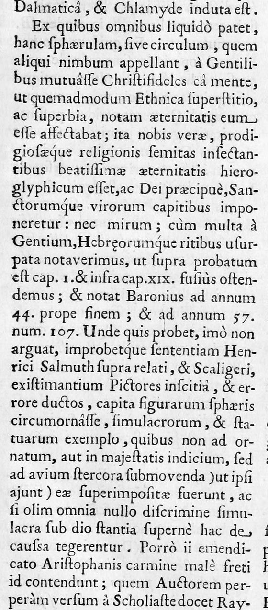
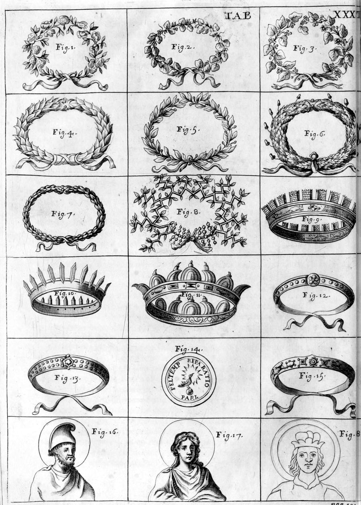

“Ad avium stercora submovenda”: where the halo came from (p. 115)
Latin: Rome 1690, part I, ch. XIV, p. 115, scan. Abbreviations expanded, long s modernised. Highlighted: what bears on Lecky’s note.

From all this it is clear that the faithful of Christ borrowed from the gentiles this little sphere or circle, which some call the nimbus, with this intention: that just as pagan superstition and pride used it as a mark of eternity, so for us, who follow the paths of the true and wonderful religion, it should be the hieroglyph of the most blessed eternity, and be placed above all on the heads of God and of holy men … Hence anyone may test, or rather refute and reject, the opinion of Henricus Salmuth, cited above, and of Scaliger, who think that painters, led by ignorance and error, put discs round the heads of their figures, following the example of images and statues on which such discs had been placed not as ornament, or as a sign of majesty, but (as they say) to keep off the droppings of birds; as if in the old days all images standing in the open air had, without distinction, been covered on top for this reason. …
And so this sphere was given not only to men but also to animals: those, namely, that were held to be specially sacred to the gods, or eternal by their very nature. This is shown by a coin of Faustina reported by Pignorius, on which Eternity sits, holding a radiate peacock in her right hand (in the said plate XXXVI, fig. 14). Disagreeing with Pignorius, I think this bird was rightly recognised by Oiselius, who interprets it as a phoenix: and indeed the phoenix is far more fittingly painted with Eternity than the peacock, being called “the eternal bird” by Claudian …
Original Latin
Ex quibus omnibus liquidò patet, hanc sphaerulam, sive circulum, quem aliqui nimbum appellant, à Gentilibus mutuasse Christifideles eâ mente, ut quemadmodum Ethnica superstitio ac superbia notam aeternitatis eum esse affectabat; ita nobis verae, prodigiosaeque religionis semitas insectantibus beatissimae aeternitatis hieroglyphicum esset, ac Dei praecipuè, Sanctorumque virorum capitibus imponeretur … Unde quis probet, imò non arguat, improbetque sententiam Henrici Salmuth supra relati, et Scaligeri, existimantium pictores inscitiâ et errore ductos, capita figurarum sphaeris circumornasse, simulacrorum et statuarum exemplo, quibus non ad ornatum, aut in maiestatis indicium, sed ad avium stercora submovenda (ut ipsi aiunt) eae superimpositae fuerunt, ac si olim omnia nullo discrimine simulacra sub dio stantia supernè hac de caussa tegerentur. …
Quapropter hac re non hominibus tantum dabatur haec sphaera, sed animalibus etiam, illis videlicet, quae vel numinibus peculiariter sacra, vel ipsâ naturâ aeterna esse reputabantur. Docet hoc nummus Faustinae à Pignorio relatus, in quo expressa sedet Aeternitas, dexterâ pavonem radiatum gestans; in dicta Tab. XXXVI. Fig. 14. quam ego avem, à Pignorio dissentiens, ab Oiselio bene cognitam reor, Phoenicem interpretante: et quidem longè opportunius Pavone Aeternitati appingitur Phoenix, quam aeternam avem appellat Claudianus …
The order of the two paragraphs is the page’s own: the halo passage is in the left column, the coin in the right. Ciampini goes on to quote a saying he attributes, through an Arabic writer, to Hermes Trismegistus: “God is a circle, or intelligible sphere, whose centre is everywhere and circumference nowhere.” So on this page the peacock is Pignorius’s reading, which Ciampini rejects; Lecky’s note does not say so.
Plate XXXVI: crowns, a radiate bird, and the first halos

The coin as engraved does not match the text: Ciampini calls it “a coin of Faustina”, but the legend FEL TEMP REPARATIO (“the happy restoration of the times”) belongs to coins of the sons of Constantine, minted from 348, nearly two centuries after Faustina. The plate may show a different coin from the one described, or the engraver may have substituted one; this edition has not looked further.
Further down the rabbit hole
Sources that Lecky cites in the notes next to the ones that cite this page.
- Rio, De l’art chrétienHow oil painting reached Italy, and why its bringer preferred Venice
- Marangoni, Delle cose gentilesche e profaneOrpheus as Christ on p. 45; two other notes not there
- Ford, A Handbook for Travellers in SpainThe Alhambra as a tent turned to stone, and the sculptor who prayed before he carved
- Vitet, Études sur l’histoire de l’artWhy the saints in Rome’s mosaics grew ugly: Lecky blames the monks, his source blames the barbarians
- Didron, Iconographie chrétienneHow medieval art pictured Christ the Judge
- Augustine, De civitate DeiSeventy reports, not miracles, and a town, not a province
Backlinks
Every place in Rationalism in Europe that links to this page (generated automatically when the site is built).